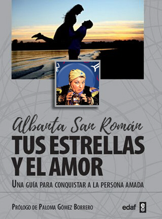

TUS ESTRELLAS Y EL AMOR
Nunca antes un libro había desvelado con tanta amenidad y precisión todos los secretos sobre el amor y la seducción que podemos encontrar en el mensaje de las estrellas que hay oculto en nuestro signo del Zodíaco. ¿Con qué signos somos más compatibles? ¿Qué errores no debo cometer si deseo conquistar a un Acuario? ¿Si soy Aries, con qué otros signos puedo tener una relación más atrevida?
Albanta San Román, una de las más prestigiosas experimentadas astrólogas de España, nos contesta a todas estas preguntas y muchas más, desde la solvencia y el conocimiento de miles de consultas atendidas, avaladas por años de estudio e investigación. Una obra que te sorprenderá, donde con toda seguridad te reconocerás, y en la que por encima de todo encontrarás un aliado valiosísimo para abordar una aventura sentimental y conseguir el amor de tu vida.
Tapa blanda: 14.25€